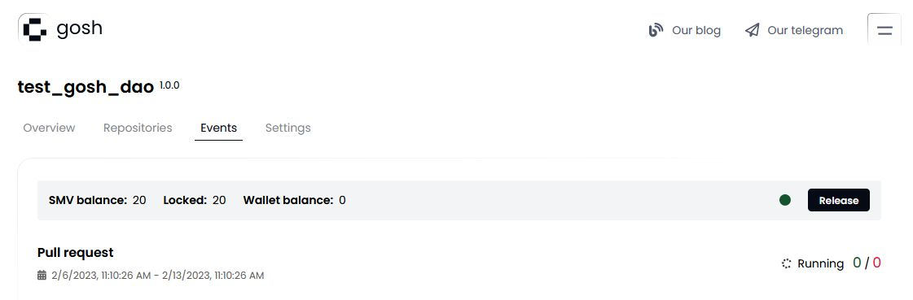
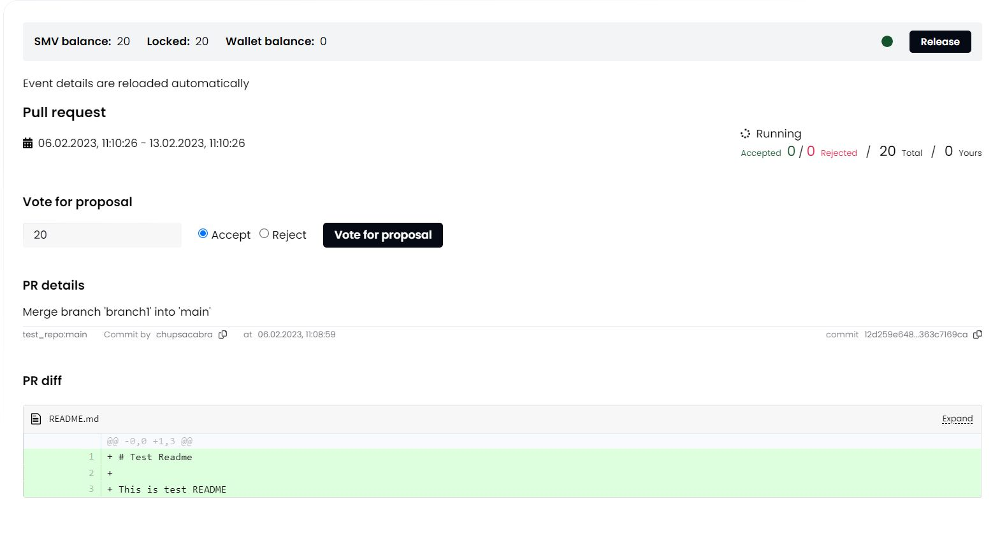
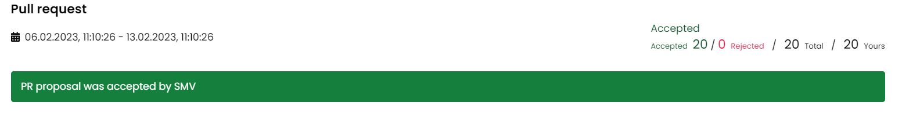
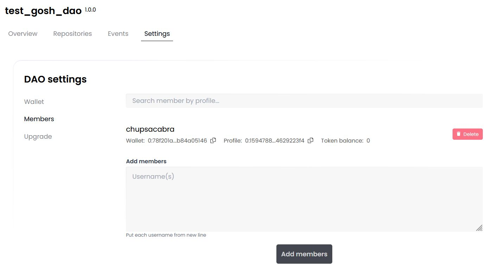

GOSH Web
GOSH Web is also a good way to get started with GOSH.
It implements GOSH repository management as a simple web interface.
You will be able to create your GOSH account and Decentralized Autonomous Organization (DAO), set up and manage repositories. Repositories stored in GOSH can then be interacted with like any regular remote repository, with a few small configurations to git, making decentralized code management easily available to anyone.
Create account
To get started with GOSH, you need an active Github-account.
Click Create account with Github to start registering on GOSH

After click Authorize gosh-sh

Info
The special GOSH DAO Bot will help with registration in Gosh. It will deploy your DAO and upload your selected repositories to GOSH.
In the list of organizations received from Github, click on the organization

and select repositories for upload into Gosh.

Do this for each organization for which you want to upload repositories to Gosh.
Danger
After registering on GOSH you will not be able to return to this step in this release.
This will be available later
Info
If you want other GOSH users to be able to find you by your email, give permission.
Then click Upload

If you are familiar with blockchain, you know what to do with a seed phrase.
If you're new to blockchain, all you need to know, is that this is the key to your account and all your assets on GOSH. Your public key, which can identify you on the blockchain and the secret key you'll use to sign your actions can always be calculated from your seed phrase.
To create the GOSH-account, the seed phrase will be generated for you. If you already have the GOSH-account, click Clear and enter your own one seed phrase.

Danger
Write your seed phrase down and store it somewhere safe, and never share it with anyone. Avoid storing it in plain text or screenshots, or any other non-secure way. If you lose it, you lose access to your assets. Anyone who gets it, gets full access to your assets.
Info
Your seed phrase will be used to log into GOSH.
Once you have written down your seed phrase, click Continue.
Then choose a short nickname or create a new one and click Create account.
Warning
The Usernames must contain only Latin letters, numbers, hyphen, underscore character ( a...z, 0...9, -, _ )

When entering the GOSH will ask you to set up a PIN code:
Info
Set a new PIN code for each new session.

And unlock with PIN code.
The Organizations page will open after your account is created.

Info
When the repositories are uploaded, a notification will be sent to your email.
Follow the link in the letter.

Enter the saved seed phrase and click Sign in.

Also set up a PIN code and unlock with PIN code.
Create Organization (DAO)
Click Сreate new DAO button in the Organizations section.

On the DAO settings page that opens, input:
-
Organization name
Warning
The Organizations name must contain only Latin letters, numbers, hyphen, underscore character
( a...z, 0...9, -, _ ) -
Organization picture
The icon will be generated automatically.
-
Theme tags
You can add up to 3 tags separated by spaces. According to them, GOSH users will be able to find your DAO.
-
Description
-
Total supply
You also need to enter the number of tokens that will be issued for this DAO.
The maximum value of the total supply can be the number 2^128.
-
Allow mint
This is a permission to issue DAO tokens. It is enabled by default.
In the future, it will be possible to disable the issuance of DAO tokens through proposal and voting in the Settings section.
Warning
If you uncheck this box during the initial setup, then the DAO tokens will never be issued.
Click Create organization.

The DAO page will open after its creation.
Overview of the DAO pages
All information about your DAO and its activities will be displayed here.

Information about DAO assets is displayed on the right.
-
DAO total supply - the total issue of tokens of this DAO.
-
DAO reserve - unallocated tokens.
Push on the SEND button, you will create an proposal to transfer tokens from the DAO reserve to the DAO member.
Push on the Mint button, you will create an proposal to issue additional tokens for this DAO.

-
Your wallet balance - the amount of tokens you have in this DAO.
Info
When creating a DAO, 20 tokens from the DAO reserve will be issued to your wallet.
Push on the SEND button, you will to transfer your tokens to the DAO reserve or to the GOSH user.
-
Allowance - the amount of tokens (upper limit) within which a DAO member can vote.
It is assigned when accepted as a member of the DAO. This determines the reputation of the DAO member. The Allowance can be changed only by voting.

-
Members - total number of DAO members.
From here you can also send an invitation to become a member of the DAO.

- Recent proposals
Information and status of the recent proposals will be displayed in this section. Click on the name of the proposal you can go to the event page and vote.

- In the Repositories section, you can quickly find or create a repository.

- DAO system repository
The _index is a DAO system repository that is created automatically.
Info
After creating the DAO, it will already contain a text file with a brief description of your DAO, which you added in the settings earlier.
To add a README for your DAO, go to the _index repository and create a file in the main branch.

DAO Set up
You can continue with the initial setup the DAO in the Settings tab.

In the Token Setup section, you can create a proposal to ban the issue of tokens from this DAO by unchecking the box.
Warning
After the ban on the issue of DAO tokens, it will be impossible to allow the issue.

In the Proposal setup section you can enable/disable the option to view the voting results before it ends.
And also allow or prohibit discussion when working with proposals.

In the Members setup section you can grant or deny external users the ability to request membership in this DAO.

Then add a comment on changing the settings for other members of the DAO and click Save changes and start proposal.

Info
All settings and actions in the DAO will be performed the voting procedure.
Create Repository
To create a repository in your DAO click Create new in the Repositories section.

Enter repository name and its description and click Create repository.
Warning
The repository name must contain only Latin letters, numbers,hyphen, underscore character( a...z, 0...9, -, _ )

A page with DAO events will open for you.

Open the event click on its name.

The page that opens displays the name of the proposal, its status, and the time of creation and as well as the end of voting.

The scale shows the number of votes for the proposal and against.

Specify the number of tokens within your allowance for voting and choose whether to accept or reject this proposal.
Add your opinion about the proposal to the discussion below and click Send vote

Create Branch
Repository is created with default main branch. To create another branch, click on the branches counter.

Select the branch to be forked, enter new branch name, and click Create branch.
Warning
The branch name must contain only Latin letters, numbers, hyphen, underscore character ( a...z, 0...9, -, _ )

Once the branch is created, it will appear in the branches list.

Switch to it via drop down list.

Create File
To create file, click Add file button.

Enter file contents and name.

You can use Preview if needed. MD syntax is supported for preview.
Once done, scroll down to Commit data, enter commit info and click Commit changes.

Commit status will be displayed below.

If the branch you are working in requires no voting to confirm commits, the file will be added. Otherwise a DAO vote will be initiated.
Create Pull Request
Click on the Pull requests tab and set up the pull request: what branch to merge from and to. Once selected, click Compare.

The branches will be compared. Review the changes, set up the pull request and click Commit changes.

Info
Note: When merging into the main branch, and in some other cases (depending on DAO setup), a DAO proposal will be initiated by trying to commit.
Organization Tokens have to be sent to the DAO Soft Majority Vote contract to start a proposal for DAO members to vote on.
Voting in SMV (Soft Majority Vote)
Actions that require a DAO vote are performed by creating a proposal.
To create a proposal, or to vote for a proposal someone else created, some of your tokens need to be allocated to SMV (once the proposal is completed), you can get them back.
Info
You can vote for a proposal only once.
For example, to merge into main, create a pull request from some other branch. A proposal will be generated and will appear on the Events page.

Open the proposal and review the contents.

The voting period is indicated on the proposal page. This is the time allotted for voting. Unless a decisive majority of >50% is achieved early, votes will be counted at the end of this period.
Voting statistics are located under the status Running. The green and red counters indicate how many tokens have been used at the moment to vote for and against the proposal.
The green indicator in the top right corner means that the SMV smart contracts are not currently processing any new votes. It turns red when the SMV contracts are busy.
Once you have made a decision, select the amount of tokens with which you are ready to vote and click Vote for proposal
The red and green numbers next to Running status indicate how many tokens were used by now to vote for and against the proposal.
The green indicator in the top right corner means that the SMV smart contracts are not currently processing any new votes. It turns red when the SMV contracts are busy.
Once you have made a decision, input the amount of tokens, select Approve or Reject and click Vote for proposal. Vote registration can take a bit of time.
Info
As per the rules of Soft Majority Voting, to have a proposal approved early, you need at least 50% of the total supply of tokens in the repository + 1 token used to vote for the proposal.
For example, in a repository with two members, where the total supply of tokens is 200, 101 token needs to be used to instantly approve a proposal. Thus with every member holding 100 tokens a proposal can never be instantly completed without the participation of members other than the proposal's author.
On the other hand, so as not to depend on all members of an organization to vote, soft majority vote will complete with an approval at the end of the voting period, if 10% of the total token supply were used to vote for, and no one voted against.
The more tokens are sent against the proposal, the higher the approving amount needs to be (up to 50% of the total supply + 1 token) for the proposal to pass.
Other members of the Organization, who have transferred their tokens to SMV, will be able to vote for the proposal on this page in their own accounts.
Info
Currently, even in organizations with a single member, voting still takes place when a proposal is created. 51 tokens are needed to approve a proposal in such a repository.
Once a majority has been reached early, or the voting period ended and the soft majority vote result was decided, the proposal completes and the proposed action is performed.

View Public Key
A user needs to know their public key, for example, when joining an organization.
To view your public key go to the main page of your account and click Settings.
Danger
Avoid storing your private key and seed phrase in plain text or screenshots, or any other non-secure way. If you lose it, you lose access to your assets. Anyone who gets it, gets full access to your assets.

Add Members to Organization
Go to Organization Settings to the Members tab to manage your organization.
To add member enter the username of each candidate from a new line and click Add members button.

What's next?
Set up Git Remote Helper and continue working with your repository.
You'll need your wallet credentials. Go to the main page of your account and click Settings. Scroll down and copy them.

To view the command to clone your repo, click the Clone button on your repo page.